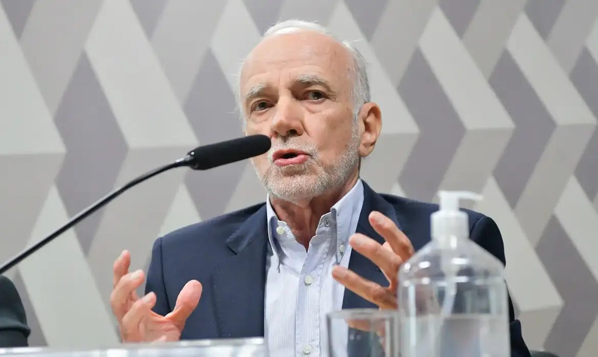

¶ Atualidades o fato da semana
Juro alto causa a dívida, ou a dívida causa o juro alto?
A proposta de André Lara Resende de levar a Selic a 7,5% em um ano chegou ao radar do presidente e reabriu a pergunta mais antiga sobre o juro: de que ele é feito.

13,75% → 7,5% SELIC HOJE E A PROPOSTA
Uma proposta do economista André Lara Resende chegou ao radar do presidente: baixar a Selic de 13,75% para 7,5% em doze meses. No domingo (1º), o ministro da Fazenda, Dario Durigan, disse que “nenhuma dessas ideias como tabelamento de juros está na mesa do presidente”. Para Lara Resende, é o juro que faz a dívida crescer. Para o mercado, o juro é alto porque a dívida é arriscada. O Metal Estéril pergunta antes: de que é feita essa taxa?
¶ Explicando
O juro na lei brasileira, de 1832 a hoje, em seis datas
Existe limite para os juros no Brasil? Depende de quem empresta.
§ Método
O outro lado vem primeiro
Toda tese começa pelo melhor argumento contrário, e todo número traz órgão, documento e ano.
¶ Do arquivo Auctoritates
“Pois quando foi que a amizade cobrou de um amigo cria de metal estéril?”
Antônio, em O Mercador de Veneza, I.3